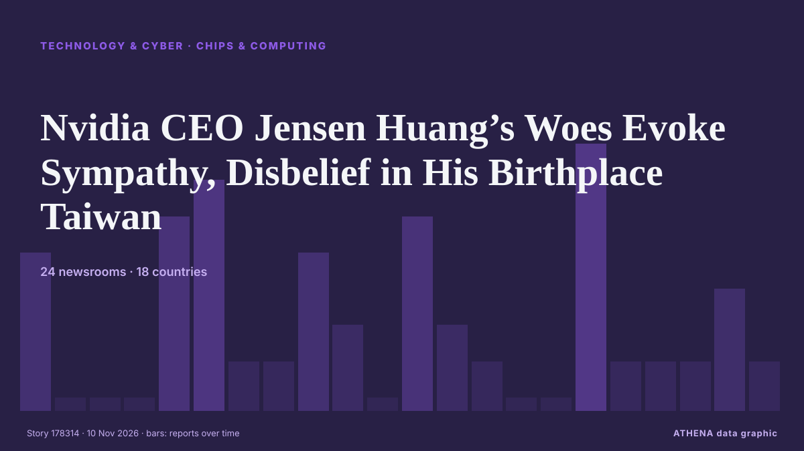

Τεχνολογία, ΤΝ & Κυβερνοασφάλεια
ΧορηγούμενοΠαρουσιάζεται από  Cybernetics and Artificial Intelligence Lab Welcome to the Cybernetics and Artificial Intelligence Laboratory, established at the Department of Business Administration of the National and Kapodistrian University of Athens. The lab is headed by Professor Dimitrios Thomakos. The lab aims to do research that can be published in top venues. Our research uses tools and methods of Artificial Intelligence, and lies in the following areas: - Forecasting - Decision making - Cyber security - Finance We are always looking forward to collaborating with exceptional students!
Cybernetics and Artificial Intelligence Lab Welcome to the Cybernetics and Artificial Intelligence Laboratory, established at the Department of Business Administration of the National and Kapodistrian University of Athens. The lab is headed by Professor Dimitrios Thomakos. The lab aims to do research that can be published in top venues. Our research uses tools and methods of Artificial Intelligence, and lies in the following areas: - Forecasting - Decision making - Cyber security - Finance We are always looking forward to collaborating with exceptional students!
Οι τίτλοι των ειδήσεων παρουσιάζονται στα αγγλικά, όπως δημοσιεύτηκαν.

Επεξεργαστές & υπολογιστικήNvidia CEO Jensen Huang’s Woes Evoke Sympathy, Disbelief in His Birthplace Taiwan
Αναφέρθηκε από 24 μέσα σε 18 χώρες από τις 8 Νοε. Πρώτη αναφορά από Taipei Times. Το ATHENA εκτιμά τον κίνδυνο σε 3.8/10 (μέτριος), με βεβαιότητα 87%.
| 28 Οκτ | 88 |
|---|---|
| 29 Οκτ | 89 |
| 30 Οκτ | 80 |
| 31 Οκτ | 34 |
| 1 Νοε | 48 |
| 2 Νοε | 111 |
| 3 Νοε | 102 |
| 4 Νοε | 99 |
| 5 Νοε | 112 |
| 6 Νοε | 54 |
| 7 Νοε | 36 |
| 8 Νοε | 39 |
| 9 Νοε | 65 |
| 10 Νοε | 9 |
Ukraine Drone Forces Shift to Starlink Alternative for Comms to Hit Russia
Ukraine may be adopting Israeli-Italian HiSKY satellite links for deep-strike drones, trading Starlink’s capacity in exchange for greater resistance to jamming and US interference. από Kyiv Post
Spanish investigators slam TikTok’s inaction on child abuse
A Spanish anti-disinformation foundation accused TikTok on Monday of not doing enough to prevent paedophiles from accessing child sexual abuse material or soliciting images from children on the… από The Local Spain
Anthropic unveils new Fable, Mythos models as competition heats up ahead of IPO
Anthropic on Monday unveiled two new artificial intelligence models, Claude Fable 5.2 and Claude Mythos 5.2, as the OpenAI rival seeks to strengthen its position in the fast-growing AI market ahead… από Dawn
Nvidia spy allegations likely to spur laws to tighten China's access to AI chips
NEW YORK: Congress is more likely to pass legislation aimed at tightening China's access to AI chips following news that Nvidia CEO Jensen Huang had a relationship with a suspected Chinese… από New Straits Times
Australia to adopt 'mandatory' AI safeguards
Prime minister Anthony Albanese said the task was to shape AI rather than allow it to shape us, while keeping the booming industry in check. από Free Malaysia Today
France blames Iran for cyberattack on supermarket fridges
Retailers have been forced to discard food and temporarily take affected equipment offline. από Business Daily Africa
China's Journalists' Day celebrated at 9th CIIE
CIIE highlights China's market appeal and opening up. από CGTN (China)
Google unveils new AI chip variants as cloud demand surges
BENGALURU: Alphabet’s Google introduced two new variations of its in-house tensor processing units (TPUs) on Monday, stepping up its challenge to Nvidia’s dominance in the booming artificial… από New Straits Times
Japan's Mitsui Chemicals to buy chip materials maker JSR for $11.6bn
Mitsui Chemicals plans to acquire semiconductor materials maker JSR in a transaction valued at JPY1.84 trillion (approx. από DigiTimes Asia
Meta expands AI age checks for Instagram teens as lawsuits mount
Meta said it was continuing to roll out the age-estimation technology on Facebook and would begin introducing similar technology globally on Threads later this year. από The Business Standard (Bangladesh) (working feed)
Citing government pressure, Russia's top independent newspaper closes its office after three decades
Novaya Gazeta was the last major independent media outlet critical of the Kremlin that remained active in Russia. από PBS NewsHour World
Democrats-controlled Congress gets first post-'Blue Wave' crack at data centres with permitting bill
Permitting bill is US Congress' most viable option this year to tackle backlash over AI data centres and the measure would require them to pay more of the cost of grid and transmission upgrades. από TRT World
Hackers Claim Leaked Rosstat Data Shows 450,000 Russian Deaths
Cyber groups Belarusian Cyberpartisans and Silent Crow have claimed that exfiltrated records from Russia’s State Statistics Service (Rosstat) indicate between 394,000 and 450,000 deaths linked to the… από Kyiv Post
Royal Navy launches first autonomous squadron of uncrewed vessels
Royal Navy launches first autonomous squadron at Portsmouth, deploying uncrewed boats for frontline surveillance, reconnaissance and force protection operations. από The Herald (Scotland)
AI power rush sends data centers hunting for used turbines and jet engines
Utilities, developers and firms racing to power artificial intelligence (AI) data centers are scouring the world… από BusinessWorld
Nvidia shares slide amid spy claims
Nvidia shares plunged more than eight per cent as Wall Street opened on Monday after a spying scandal involving chief executive Jensen Huang threatened to derail the chipmaker’s recovery from last… από City A.M.
NASA is looking for astronauts to live and work on the Moon
NASA needs more recruits in order to return to the moon after being gone more than half a century. από NPR
Norway reins in data centre industry amid AI boom
Norway’s government said on Monday it will curb the rapid growth of power-hungry data centres in the Nordic country, becoming the latest nation to limit a buildout driven by the global artificial… από Cyprus Mail
SpaceXAI started Southaven data center construction without water permits, state alleges. Fines could exceed $6M
SpaceXAI could face fines of over $6 million for allegedly violating state water pollution laws at its Southaven data center facilities. από Mississippi Today
Fahmi: Malaysia considers accelerating quantum migration to boost data security
DOHA: Malaysia is considering accelerating its quantum migration process to strengthen national data security amid advances in quantum computing technology that are expected to pose new challenges to… από New Straits Times
Apple Intelligence AI service registers with Chinese regulator for use on tablets, laptops
China requires companies to register large language models and generative AI services with regulators before making them available to the public. από The Business Standard (Bangladesh) (working feed)
Mumbai Bans Rockets, Aerial Crackers Till November 25 After Diwali Fires
Three major fires were reported in different parts of the city on Diwali night alone, gutting several huts, shops, a garage, and parts of a commercial building. από NDTV
Iranian news agency seeks media deal in Cyprus
Iran’s state news agency IRNA is exploring a cooperation agreement with Cypriot media outlets, its managing director Hossein Jaberi-Ansari told Tehran’s newly appointed ambassador to Cyprus. από Cyprus Mail
Web3Auth says it frontran hackers by moving $5.6 million out of exposed Keplr wallets
Web3Auth's communications also referred to an "original attacker," suggesting some funds were stolen, but did not elaborate. από The Block
DeepSeek’s AI agent platform hits 1.54 million daily users
The Chinese AI disruptor continues to challenge Anthropic and OpenAI with an entire swath of applications built around open-source AI technologies. από Free Malaysia Today
Calls for data centre moratorium 'until we get the rules right'
The Conservation Council is calling for a moratorium on new data centre developments in the ACT until tougher rules are in place, amid "increasing concerns" about the impact on Canberra's water… από ABC News Australia
Revolut enters Irish mobile phone market with introductory €9.99 per month offer
Revolut said its mobile phone plan ‘challenges outdated industry trends’. από TheJournal.ie
When Jack Grealish could return for Everton as training plan emerges after new update
Jack Grealish has missed Everton's last four matches - but David Moyes confirmed earlier this week that he will be working with the winger soon. από Liverpool Echo
Environmental groups embrace AI, even as they warn of data center impacts
15 environmental groups use AI but warn of data centres' heavy electricity and water demands. από Express Tribune
TSMC reaffirms foundry focus after report of 3D DRAM plans for Nvidia
TSMC is considering making advanced memory chips and has begun drafting plans for 3D DRAM at Nvidia’s request, The Information reports. από The Next Web
AI companies scramble to navigate a world hostile to data centres
Would-be data-center builders weigh their options. από New Zealand Herald
Pakistan-built robots serve taste of future to Karachi diners
Robia and her colleague Jojo are the DIY creations of Pakistani engineer Syed Osama Aziz, who is bringing a sci-fi reboot to Karachi's storied dining scene. από The Business Standard (Bangladesh) (working feed)
Israel's detention of Abou Shhadeh 'a campaign to silence'
Israeli forces detained Palestinian journalist Abed Abu Shehadeh over an interview with Azmi Bishara, as threats against Arab political leaders intensified. από The New Arab
DOJ Creates 'Super Intelligence' Task Force to Guard Against AI Abuse
Led by two senior DOJ officials, the Super Intelligence Task Force will target misuse by foreign governments, criminal groups and fraudsters—while pushing AI developers to tighten internal controls… από Decrypt